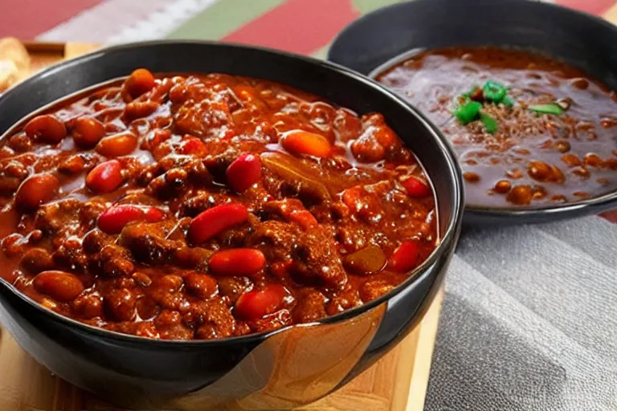

Chili

Description
Ground beef, beans and vegetables stewed over time.
Ingredients
Sausage
Onion
Diced Tomatoes
Tomato Paste
Kidney Beans
Black Beans
Zucchini
Steps
Make the meat sauce.
Add ingredients to pot.
Let simmer for 2-3 hours.